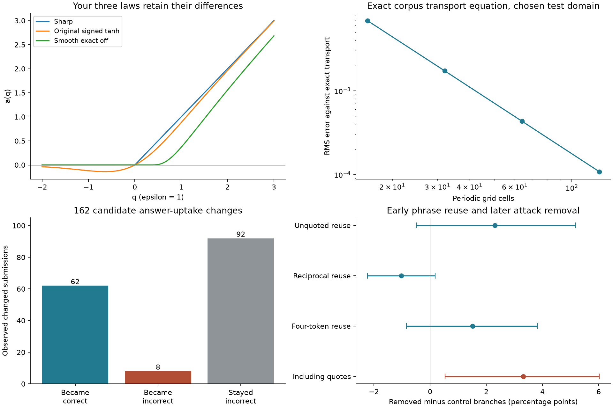

Streams and Rocks · completed 22 October 2026
Your corpus equations and real records of uptake and conflict
Earlier community simulations included added equations. This extension makes that distinction explicit and implements the supplied corrected corpus. The empirical analyses below examine actual records; they do not identify a phrase match with Sens or fit your field equations to invented social coordinates.
Equation-by-equation audit · Full findings and limitations · Exact source paragraphs · Frozen protocol
What is now using your exact equations
The checked implementation preserves coordinate alignment, reciprocal scaling, binary consistency, the exact-edge constraint, accumulated input A and source J=κA, all three threshold laws, both gradient regularizations, fixed-direction force, symmetric stress and the normalized momentum balance. The scalar transport equation was run on a stated periodic test domain. No fully coupled social Navier–Stokes solution is claimed.
The signed tanh law gives −0.119202922 at q=−ε with ε=1; both exact-off laws give zero. With unit constant excess input, the accumulated-source law gives A(1)=1 and total field increase 0.5. Source-integral error stays below 3×10−15. Grid refinement reduces transport error about fourfold per doubling. These verify the implementation, not a law of human behavior.
The earlier logistic wording score and decaying penalty memory remain documented alternatives. They are not your accumulated-source law. Your corrected corpus supplies a field memory equation; a mapping from real penalties to its utility input and later decisions remains unspecified.

Taking up an answer can help or spread a mistake
In 500 DeliData group discussions, the conversion retains 538 changed submissions with an observed earlier submission. Of these, 162 in 122 groups match a partner's intervening proposed answer: 62 become correct, 8 become incorrect, and 92 remain incorrect. Mean correctness change is +33.3 percentage points, group-bootstrap interval +23.8 to +43.0. This selected before/after change is not a causal estimate of copying.
| Changed-answer group | n | Became correct | Became incorrect | Stayed incorrect |
|---|
| all changed | 538 | 154 | 40 | 344 |
| candidate uptake | 162 | 62 | 8 | 92 |
| no detected proposal | 376 | 92 | 32 | 252 |
| candidate complete card vocabulary | 75 | 19 | 2 | 54 |
| candidate within 10 events | 60 | 23 | 0 | 37 |
Sixteen reviewed candidates include seven explicit acceptances, two jointly constructed answers, four sequence-only cases, one return to an earlier idea, one instance of deference and one response to a request for an answer. A participant can contribute the decisive reasoning before adopting a partner's final wording; calling that simple copying would erase their contribution.
Only one INITIAL event survives in this conversion. Missing starting states were not reconstructed. Submitted-card vocabularies can be incomplete; the strict complete-vocabulary subset gives fewer improvements. Review was by one assistant, not independent human validation. Answer text itself can reveal correctness.
Repeated wording is often a rebuttal
The forum test uses the first three comments in each of 2,259 matched conversation pairs, before the final labelled comment. The primary reuse difference is +2.30 percentage points [−0.49, +5.16]. Reciprocal reuse gives −1.02 [−2.23, +0.18]. Neither gives clear evidence of a difference in these records. Including quoted text changes the finding.
| Early feature | Removed | Control | Difference [95% interval], pp |
|---|
| Unquoted reuse | 1017 | 965 | 2.30 [-0.49, 5.16] |
| Reciprocal reuse | 100 | 123 | -1.02 [-2.23, 0.18] |
| Four-token reuse | 453 | 419 | 1.51 [-0.84, 3.81] |
| Including quotes | 1506 | 1431 | 3.32 [0.53, 6.02] |
The twelve reviewed matches include rebuttals, common phrases, partial agreement and a quote-filter failure. One conversation contains mirrored personal challenges. These observations distinguish what the words do; they do not establish shared desire, causal imitation or Girard's rival-double mechanism. A later attack removal is a recorded institutional action, not a diagnosis of a participant.
Shared-topic controls retain overlap. Source balancing prevents population prevalence estimates. Missing post identifiers limit clustering; edited source texts may include later edits. A Markdown quotation continuation survived the simple filter. All these limitations remain in the full report.
Sens, Sin, context, treatment and memory
Preserves Sens while adjusting Sin remains your distinction. A phrase match is only a retrieval clue. Adoption, rejection, quotation, joint construction and deference are reviewed separately. No measured social metric, utility, pressure field or penalty-to-field coupling has been silently added. The corpus's binary consistency rule requires the same action in the same declared context; these different arguments do not satisfy that test.
Water, Fog, Smoke or Clay remain situational descriptions. Helpful uptake and mirrored conflict describe encounters, not permanent kinds of people. Strong language about refusal, force, exclusion and resistance stays connected to the observed action or attributed account.
All sixteen answer-uptake reviews and joined outcomes
| Case hash | Interpretation | Correctness change | Review reason |
|---|
| 026bec5b78ea | explicit_acceptance | 0 | Recipient asks for the reason, expresses uncertainty, then explicitly agrees to the proposed two-card set before submitting. Acceptance need not be independent understanding. |
| 033e0492f627 | co_construction | 1 | Recipient supplies the odd-card argument before the partner states the matched pair, then explains removing the even card. This is jointly developed reasoning, not evidence of one-way copying. |
| 039f467d84a1 | explicit_acceptance | 0 | Partner proposes adding the odd card. Recipient says the reasoning makes sense and explicitly says they are revising too. |
| 0569028a7b22 | temporal_only | 0 | A partner names the new single-card choice before the submission. No explicit recipient acceptance or attribution is visible. |
| 080054b6cf9e | return_to_earlier_idea | 0 | Recipient agrees with the partner but also says they had initially picked that same pair. Adoption of a genuinely new idea is not established. |
| 087f3a228d45 | temporal_only | 1 | A partner proposes the reduced pair immediately before the recipient submits it. No explicit recipient explanation is visible in this window. |
| 094bf06f8db8 | temporal_only | 0 | Several partners shift toward one card, followed by the recipient submission. The recipient does not explicitly state that this is why they changed. |
| 0a534f09f7fc | explicit_acceptance | 0 | Recipient explicitly agrees and says they will use the proposed pair, while continuing to raise an alternative argument. |
| 0b616dfbcc28 | explicit_acceptance | -1 | Recipient initially explains the odd-card choice, then submits and explicitly endorses the partner-supported alternative pair. |
| 0ca4e4b78897 | deference | 0 | Recipient attributes the decision to the other person and expresses confidence in their ability to choose, while also urging a random choice. This is deference, not demonstrated logical understanding. |
| 0ea3f1f360e5 | requested_answer | 1 | Recipient asks for a final answer and then submits the named pair. An immediate subsequent submission changes it again; uptake is transient. |
| 105529048712 | explicit_acceptance | 0 | Later partner messages genuinely advocate the single-card answer and the recipient explicitly agrees. An earlier detected message mentions a different outside example, so not every matched mention is a valid proposal. |
| 12b887b4c2cb | co_construction | 1 | Recipient raises the unnecessary-card issue before the partner states the final pair, then explains and endorses it. Both participants contribute. |
| 154a0afd53a7 | temporal_only | 0 | Partners propose a three-card set before the recipient submits it. The recipient also supplies their own alternative reasoning; explicit attribution is absent. |
| 159b851a34d2 | explicit_acceptance | 0 | Recipient first proposes a different pair; partner suggests three cards; recipient explicitly agrees with that suggestion and submits it. |
| 15dbc5e305ae | explicit_acceptance | 1 | A partner challenges the all-card consensus with a two-card proposal. Recipient explicitly says that partner is right and revises the submission. |
All twelve phrase-reuse reviews and joined outcomes
| Case hash | Interpretation | Later removal | Review reason |
|---|
| 00095cc8648f | rebuttal | 0 | Reuses the phrase naming attention to challenge its explanation, not to adopt the previous position. |
| 00228943375b | rebuttal | 0 | Repeats the possibility of being forced into a sexuality in order to reject it. Repetition reverses stance. |
| 002d8a0f8896 | common_phrase | 1 | Only a generic people-who phrase matches; the later reply also challenges a different participant. This does not establish transmission from the matched source. |
| 00518fcb7f93 | mirrored_personal_challenge | 1 | Both participants challenge the other's economic understanding; the return reply also attacks presentation. Topic phrases are reused, but common desire or a causal path to rivalry is not observed. |
| 009584aca5f9 | partial_agreement_then_rebuttal | 0 | Explicitly accepts a conditional premise, then uses it to argue for an opposing conclusion. Some proposition overlap coexists with disagreement. |
| 00a91005ed04 | common_phrase | 1 | A generic comparative phrase occurs in two distinct arguments. This is not sufficient evidence of copying. |
| 00b47ef5eb18 | shared_topic_extension | 1 | Both discuss treaty obligations, but the later participant adds a different national example. Short topic overlap does not identify imitation. |
| 00d05bab0f8a | reciprocal_rebuttal | 1 | Both participants reuse propositions to contest their implications, including a negated correlation claim. Reciprocal wording alone is not mirrored desire or personal rivalry. |
| 00dd0402d7be | rebuttal | 1 | Repeats the material-composition premise while rejecting the inference to determinism. |
| 00f7b98699ff | common_phrase | 0 | Shared language about a national public and a common introductory phrase; positions remain opposed. |
| 013b10d9af8f | quotation_continuation | 0 | Much of the purported unquoted reuse is a continuation of a Markdown quotation without repeated quote markers. The simple line filter misses this; it must not be counted as endorsement. |
| 015c86c8b44a | rebuttal | 1 | Repeats an attributed generational description specifically to reject it. |
Inspect and reproduce
37 unit tests and 87 saved-result checks passed. See check receipt, quantitative results, equation checks, frozen review and data provenance. The full README gives reproduction commands. Raw texts and identities remain local.
Sources: DeliData, Karadzhov et al., CGA-CMV, Chang and Danescu-Niculescu-Mizil, and the pinned user-supplied corrected corpus.